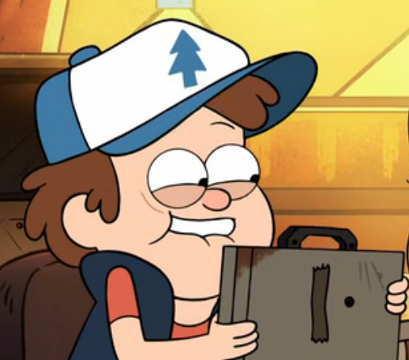

Sinopse:
Gravity Falls é uma série animada da Disney
Channel que conta as aventuras dos irmãos gêmeos, o sagaz Dipper
e a adorável Mabel Pines, cujos planos pro verão são arruinados
quando seus pais os enviam para ficarem com seu tio-avô
Stan em Gravity Falls, Oregon.
Criador: Alex Hirsch
Primeiro episódio: 15 de junho de 2012
Adaptações: Nenhuma
Gêneros: Mistério, aventura
| Temporada | Episódios |
| Temporada 1 | |
| Temporada 2 |
